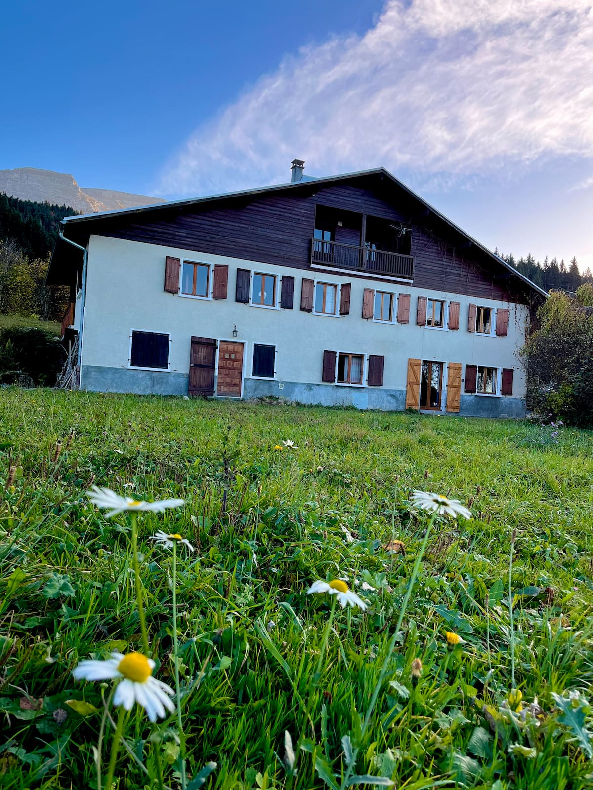
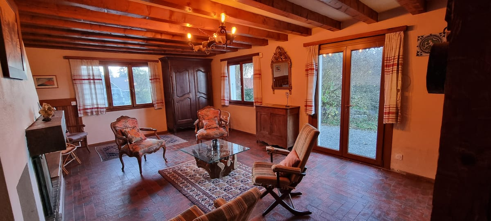

Boîte à clé sécurisée
Une arrivée simple, sans contrainte d'horaire avec l'hôte.

Chalet entier à Mont-Saxonnex, Haute-Savoie
Une ancienne ferme familiale posée au bout du chemin, pensée pour les grandes retrouvailles au calme, les semaines de marche et les soirées autour du feu.
La dernière maison du hameau
Le chalet se situe au hameau des Vuargnes, environ 3 km au-dessus de Mont-Saxonnex. La maison est installée au bout du chemin, sans passage de voitures, avec une sensation immédiate d'immersion dans le paysage.
La bâtisse est une vieille ferme achetée en 1967 puis restaurée. Elle a été aménagée récemment pour accueillir confortablement les familles nombreuses et les groupes d'amis, avec de grandes pièces de vie, des chambres simples à partager et un extérieur pour déjeuner dehors.
Une arrivée simple, sans contrainte d'horaire avec l'hôte.
Un environnement apprécié pour son panorama et son absence de passage.
Une maison pensée pour les familles nombreuses et les séjours entre amis.
Un insert efficace pour réchauffer les soirées.

Vie de maison
Le salon, la salle à manger et la cuisine permettent d'organiser facilement une semaine à plusieurs: repas de groupe, repos après la randonnée, jeux de société, lecture ou feu de cheminée quand la température descend.
Équipements
Cuisine équipée, stationnement privé, cheminée à bois, cafetière filtre, sèche-cheveux, détecteur de fumée et mobilier de jardin. Les animaux sont acceptés. La maison ne dispose pas de wifi annoncé, mais la réception mobile est possible; les couvertures sont fournies, les draps et serviettes sont à prévoir.
Infos pratiques
Deux chemins en terre carrossables mènent au hameau. Une voiture normale peut passer, mais une voiture trop basse est déconseillée. En hiver, l'accès dépend de l'enneigement et des équipements du véhicule.
Le parking gravillonné privé permet de stationner facilement 4 voitures. La gare la plus proche est Cluses, à environ 8 km et 15 minutes en voiture.
En cas de neige, pneus neige, chaînes ou 4x4 peuvent être nécessaires. Sans équipement adapté, il peut falloir laisser la voiture à environ 20 minutes à pied de la maison.
Kit chauffage annoncé: 35 €/jour du 15 avril au 15 octobre, puis 60 €/nuit du 15 octobre au 15 avril. La cheminée en insert aide à gagner rapidement quelques degrés.
Arrivée à partir de 16:00, départ avant 11:00. Capacité maximale annoncée: 14 voyageurs.
Draps, taies d'oreiller et serviettes sont à apporter. Les couvertures sont fournies, sans couettes.
Contact
Écrivez à yves.kovacs@gmail.com ou appelez le 06 14 03 36 24.